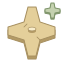
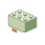
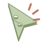
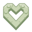

MAKE SOMETHING YOURS
把一张图片，变成积木。
从一个熟悉的形状开始，搭出属于你的想象。

AI 创作预览01
带来你的灵感
把灵感，放在这里。拖入图片，或选择上传 / 拍照JPG、PNG、WebP · 最大 15 MB
02
选择你的搭建方式
THE EVERYDAY COLLECTION示例模型

一颗苹果/ 001
从第一块，到最后一片绿叶。

逐块搭建
自由编辑
收藏灵感继续你的创作
你的模型与修改稿会出现在这里。
BUILD, BRICK BY BRICK准备模型
正在准备积木…
拖动旋转·滚轮缩放
ASSEMBLY第 0 / 115 块
从左侧选择零件，开始自由编辑
每颗积木，都可以有你的想法。修改后可保存为新版本
YOUR BRICK TOOLKIT
每一种零件，都有可能。
浏览常见积木，选一块，带到你的工作台。
常见零件示例已可用于编辑，后续将接入完整零件数据库。
MADE BY YOU
把喜欢的，都留下来。
收藏灵感，也收藏每一次亲手修改。
给你的第一件作品，留个位置。
从苹果示例开始搭建，收藏或保存后就能在这里找到。